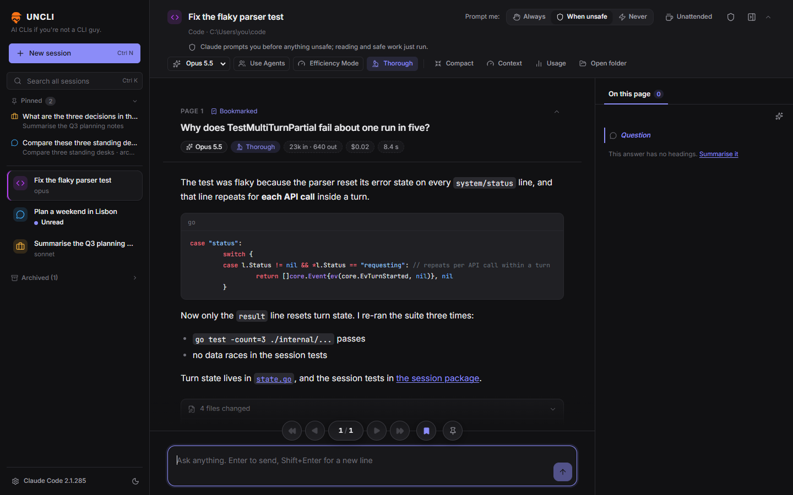
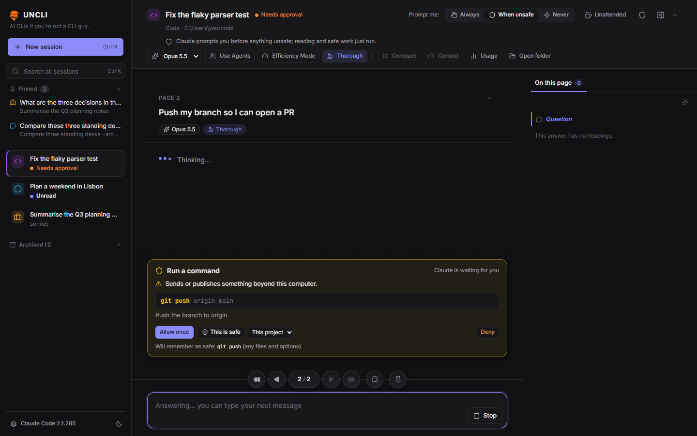
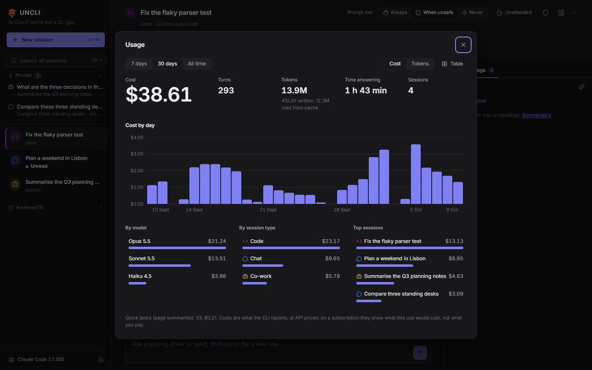
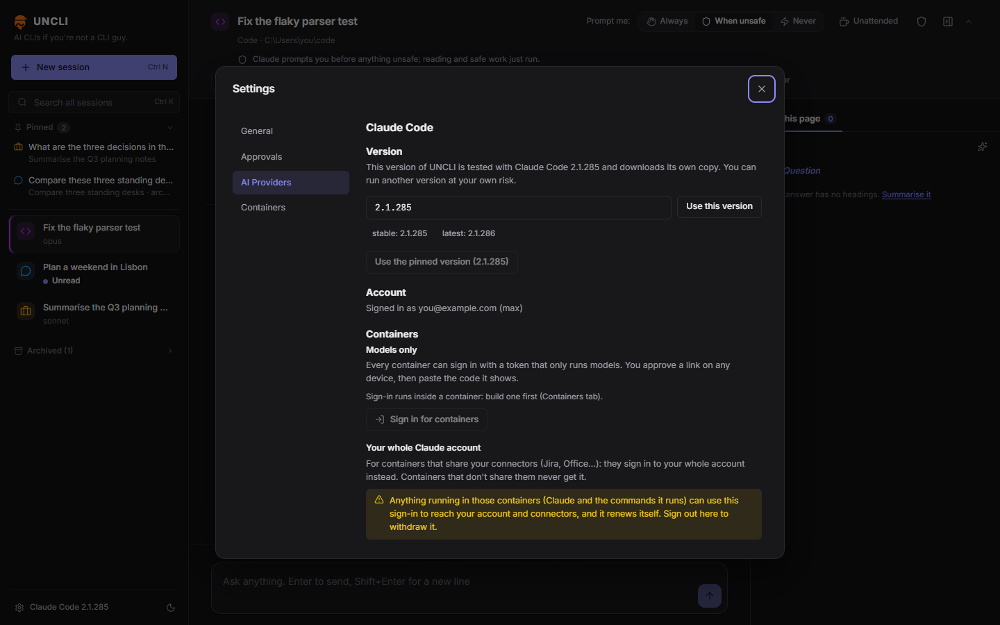
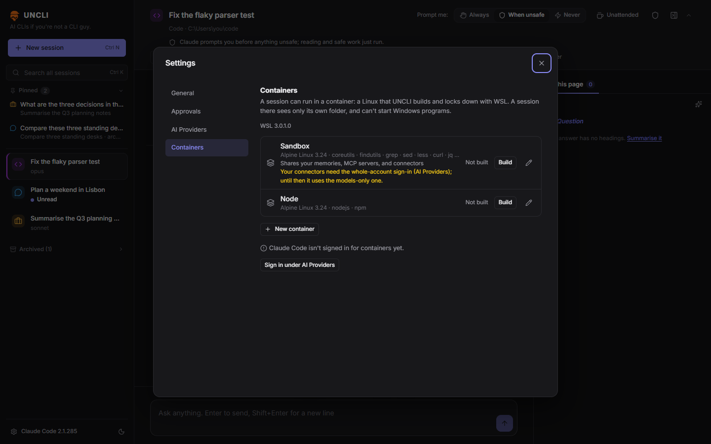

Several sessions at once
Chat, work on a folder of documents, or code in a repository, as many side by side as you like. A notification says when one finishes or needs you.
UNCLI, pronounced "un-clee". The command line, without the command line.
The best AI coding agents live in a terminal, which is lovely if you love terminals. UNCLI puts Claude Code and friends in a proper window: sessions side by side, every answer a page you can actually read, and approvals in plain words.
It drives each provider's official CLI with your own subscription, and it never switches the approvals off to look clever.
Free, MIT. No account, no telemetry. Bring your own AI subscription.

Every question and its answer is a page. Page through them, bookmark them, copy any bit with a click.
Before anything risky runs, a card says what it is and why it matters. You decide how often it asks.
Claude Code and the Antigravity CLI built in. More through plugins, described in a single YAML file.
Pinned, checksum-checked CLIs, plugins off until you say so, and a locked-down Linux when you want one.
Terminal agents ask permission in their own dialect, usually mid-scroll. UNCLI stops the agent and shows a card instead: what it wants to run, what that would do, and three sensible answers.
⚠ Sends or publishes something beyond this computer. Push the branch to origin.
Prompt me: Always, When unsafe or Never. "This is safe" teaches UNCLI for next time; the shield shows everything it has learnt.
Everything the terminal does, laid out where you can see it.
Chat, work on a folder of documents, or code in a repository, as many side by side as you like. A notification says when one finishes or needs you.
Bookmark the good answers, pin the ones you keep coming back to, and search every session at once. Finished? Archive it.
Each page lists the files the agent touched and opens them in your editor at the right line. Artifacts (HTML, diagrams, images) are kept version by version.
Change model mid-conversation, turn on Efficiency Mode or Thorough, compact the context. No slash commands to remember.
Usage by day, model, session type and session, so the monthly allowance stops being a mystery. (It was probably the Opus.)
Import a conversation you started in the terminal and carry on in UNCLI. Ctrl+Shift+P finds anything else; ? lists every shortcut.
UNCLI runs each provider's official CLI under your own account, so your subscription works the way it does in the terminal. It downloads its own pinned, checksum-checked copy and leaves yours alone.
Anthropic's agent, signed in with your Claude account.
Google's agent, using the sign-in of the Antigravity app.
xAI's agent, added as a plugin and signed in with a code.
Describe another CLI in one provider.yaml. No code.
How plugins work
A plugin does nothing until you enable it, after UNCLI shows you where it downloads from and what it runs.
Some jobs you'd rather the agent did without a cards-on-every-command chaperone. For those, UNCLI builds a small Linux of its own with WSL and runs the session inside it.
Captured from UNCLI's demo mode, so no real bills were harmed.




Limits of an alpha, and of the CLIs underneath. Worth knowing before you file the bug.
Containers lean on WSL, and the rest has only been tested on Windows 10 and 11. Mac and Linux would be nice. Would.
When the work turns into code, UNCLI opens your editor at the right file and line, and stops there. No diff viewer, no git client.
Sessions run on your own subscription, so its limits are your limits. The usage costs are API prices: what the work would cost, not what you pay.
The Antigravity CLI can't be sent files, and stopping an answer stops its process. UNCLI shows what each CLI can do; it can't add what the CLI lacks.
A plugin CLI has to run headless and talk JSON lines or ACP. Anything stranger needs a proper adapter, which means code.
UNCLI fetches its own copy of each CLI (Claude Code is about 240 MB) and checks it against the provider's checksum before it runs anything.
I'm a software engineer of about ~35 years. I was around when terminals were all we had. For some reason they are cool now -- not to me.
I have been pushing out a backlog of project ideas that I would never have had time to tackle without AI. I built BRUV and Port Authority, suffering with the Claude vscode extension and CLI, and now I realise everyone should probably vibe code their own personal chat harness.
Just in case you want to save some tokens, and have similar taste, here's mine.
It's alpha -- maybe forever -- tested on one machine with one person's habits, which is to say yours will find something mine couldn't. If it's not for you, no worries; to each his own.
— Harvey
Public alpha, Windows for now. The installer isn't code-signed, so SmartScreen will have opinions. (Noted, Windows.)